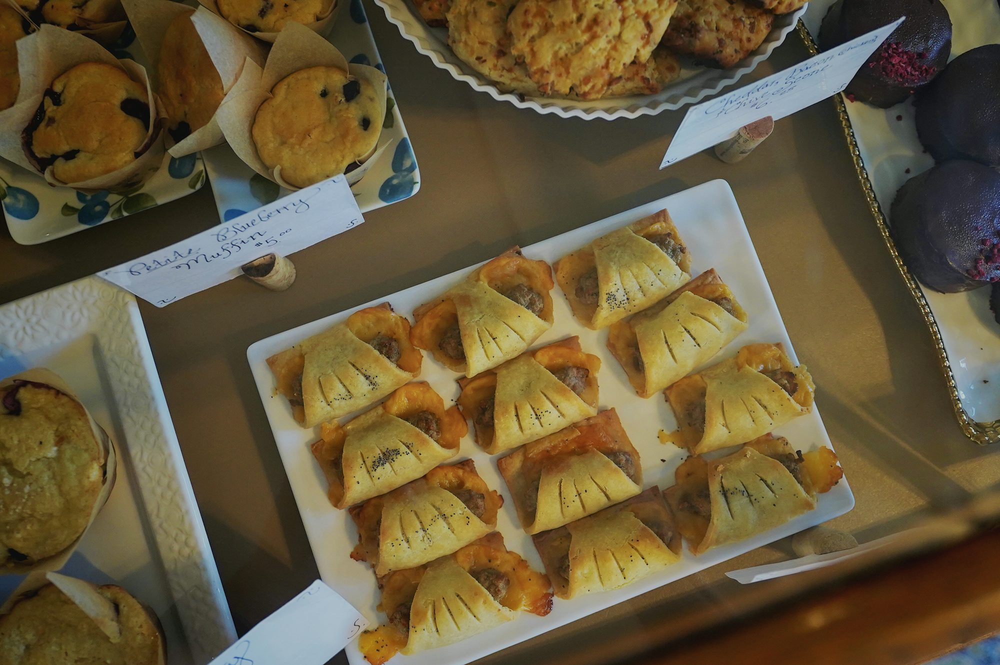

Decadent Delights: A Sweet Journey Through Global Desserts
Explore the fascinating world of desserts from around the globe, showcasing their unique ingredients, cultural significance, and the joy they bring to our lives.
Cakes often take the spotlight during celebrations, representing joy and togetherness. The classic chocolate cake, known for its rich, moist texture and luscious frosting, is a favorite at birthdays and weddings alike. Its deep cocoa flavor paired with creamy icing creates an indulgent experience that beckons to be shared. Meanwhile, the red velvet cake stands out with its striking crimson color and subtle hint of cocoa, often accompanied by a tangy cream cheese frosting that enhances its luxurious profile. Both cakes not only satisfy sweet cravings but also create lasting memories for those who partake in them.
Cheesecake is another beloved dessert that has captured hearts across the globe. This creamy delight, often topped with fresh fruits or a drizzle of chocolate, offers a delightful contrast of textures. The classic New York-style cheesecake is renowned for its rich, dense filling made with cream cheese, eggs, and sugar, resulting in a velvety slice that melts in the mouth. The versatility of cheesecake allows for endless flavor combinations, from the tang of lemon to the richness of chocolate, making it a dessert that can cater to various palates.
Beyond cakes, pies and tarts bring their own unique charm to the dessert table. The quintessential apple pie, with its flaky crust and warm spiced filling, evokes feelings of nostalgia and comfort. Often served with a scoop of vanilla ice cream, this classic dessert is a staple in many homes, especially during fall celebrations. Pecan pie, with its sweet and nutty filling, is another favorite, particularly in the Southern United States, where it graces tables during holidays and family gatherings.
Tarts offer a more refined dessert experience, often showcasing seasonal fruits and delicate fillings. The French tarte aux fruits, with its crisp pastry and colorful arrangement of fresh fruits, not only tantalizes the taste buds but also delights the eyes. Each slice is a celebration of flavor and artistry, making it a popular choice for special occasions. Similarly, lemon tarts, known for their tangy filling and buttery crust, strike a perfect balance between sweetness and acidity, leaving a refreshing impression.
Cookies are perhaps the most versatile and accessible of all desserts, perfect for any occasion. The iconic chocolate chip cookie, with its gooey centers and slightly crispy edges, remains a timeless favorite for people of all ages. Baking cookies often becomes a cherished family tradition, where creativity flourishes as individuals add unique ingredients like nuts, oats, or dried fruits. International cookie varieties, such as Italian biscotti, which are twice-baked for a crunchy texture, and German lebkuchen, spiced ginger cookies, highlight the diverse flavors that cookies can embody across cultures.
Pastries elevate dessert experiences with their flaky, buttery layers and delightful fillings. Croissants, especially when filled with chocolate or almond paste, offer a luxurious experience at breakfast or as an afternoon snack. Eclairs, filled with rich pastry cream and topped with glossy chocolate, are a French staple that exemplifies elegance and flavor. The skill involved in crafting these pastries showcases the artistry of bakers, transforming simple ingredients into exquisite desserts that captivate the senses.
Frozen desserts provide a refreshing contrast to traditional sweets, especially during warmer months. Ice cream, a universally adored treat, comes in a myriad of flavors, from classic vanilla to adventurous matcha. Its creamy texture and delightful taste make it a go-to choice for all ages. Gelato, the Italian counterpart, is celebrated for its denser consistency and intense flavors, often featuring local ingredients that highlight the region's bounty. Sorbet, a fruity and refreshing option, cleanses the palate and showcases the natural sweetness of fruits, providing a light and vibrant dessert choice.
Puddings and custards offer a comforting touch to the dessert repertoire, showcasing smooth textures and rich flavors. Rice pudding, often spiced with cinnamon and served warm, evokes feelings of home and nostalgia. Chocolate pudding, beloved by children and adults alike, offers a rich and creamy experience that satisfies sweet cravings. Crème brûlée, with its signature caramelized sugar crust, presents a luxurious dessert option, combining simplicity with elegance and showcasing the beauty of custard beneath its crisp surface.
Candy and confections allow for playful exploration of sweetness, inviting creativity in flavor and presentation. From chewy caramels to decadent chocolate truffles, these treats provide moments of indulgence that evoke childhood memories. Making candy, whether it involves crafting delicate chocolates or preparing vibrant gummy candies, is often a fun and festive activity that brings friends and family together, celebrating the joy of creating and sharing sweet delights.
Fruit-based desserts celebrate the vibrant flavors and colors of seasonal produce. A simple fruit salad can be transformed with a splash of citrus or a drizzle of honey, making it a refreshing and vibrant dessert option. Fruit tarts, adorned with glistening fresh fruits atop creamy fillings, not only provide a delicious treat but also serve as stunning centerpieces at gatherings, showcasing the beauty of nature's bounty in every bite.
Dessert drinks add an exciting twist to sweet indulgence, offering another layer of enjoyment. Milkshakes, thick and creamy, can be customized with various flavors and toppings, making them a delightful treat for any occasion. Hot chocolate, rich and comforting, is a classic favorite during colder months, often topped with whipped cream or marshmallows for added indulgence. Flavored coffees and teas, whether served hot or iced, provide a sweet complement to desserts, enhancing the overall dining experience and inviting relaxation.
Specialty and ethnic desserts provide a glimpse into diverse cultures and their culinary traditions. Each region boasts unique sweets that reflect local ingredients and practices. Baklava, a Middle Eastern pastry made of layers of phyllo dough, nuts, and honey, is often served during celebrations, symbolizing hospitality and generosity. Tiramisu, an Italian dessert featuring layers of coffee-soaked ladyfingers and rich mascarpone cream, invites diners to indulge in its luscious flavors, showcasing the importance of coffee culture in Italy.
As we explore the vast world of desserts, it becomes clear that these sweet creations are more than just indulgences; they represent expressions of love, tradition, and creativity. Whether enjoyed as a comforting snack or as a centerpiece at grand celebrations, desserts have a unique ability to bring people together, creating cherished memories and connections. In every bite, we savor not only the flavors but also the stories, cultures, and joys that desserts inspire.